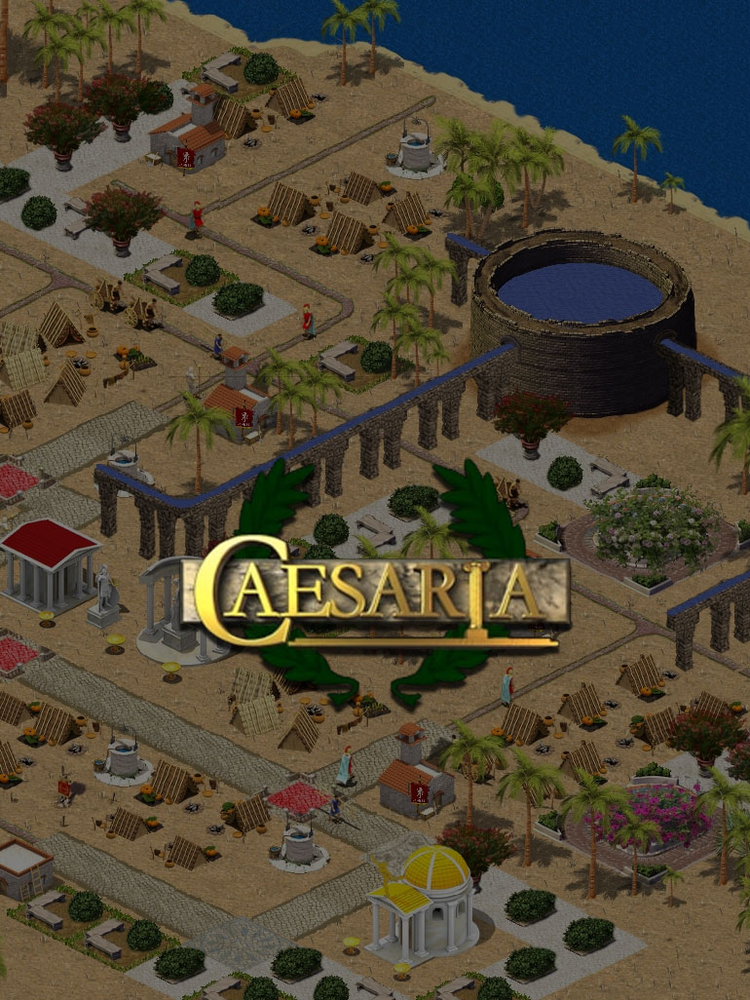

CaesarIA
CaesarIA
Details
|  | |
| Playtime | 1m 0s |
| Last Activity | 13/05/2019 3:30:06 |
| Added | 03/02/2016 |
| Modified | Never |
| Completion Status | Played |
| Source | Steam |
| Platform | PC |
| Release Date | 20/01/2015 |
| Community Score | 59 |
| Critic Score | |
| User Score | |
| Genre | Early Access Free to Play Indie Strategy |
| Developer | rdt.32 |
| Publisher | rdt.32 |
| Feature | Achievements Single Player |
| Links | PCGamingWiki Community Hub Discussions Guides Achievements Store Page News |
Description
CaesarIA is inspired by an old-school economic strategy game, Caesar III which is a masterpiece among the games of this genre in our opinion. There are different economic strategy games and they can be broken down to subtypes but from our viewpoint Caesar encompasses planning, constructing, diplomacy and military campaigns.
Economy and Trade
Miniature model of an economy leaves the ruler no room for mistakes, under his leadership there are extractive industry (mines, sawmills, outcrop mines and farms) and production (factories, armories, wineries and brandy kitchens). And if some resource is scarce or not available, then trade with the neighbors can be a solution for the difficult situation. Mini-economy is complicated and takes into account a variety of facts: taxes, import/export, population of the town, healthcare, unemployment. In order to stay in the black it is necessary to develop houses with high income level but that can lead to a rise in unemployment which consequently results in big problems such as an embezzlement of municipal purse.
Construction
Construction is defined by the needs of the town, healthcare, procurement, buildings security provision. The main idea of construction is bringing workers to the area, there actors entertain the public, engineer provides service for shabby houses, vigils fight criminals. Moreover, city folk prefer to occupy quiet picturesque location such as gardens farther from dirty barns and noisy barracks.
Diplomacy
The emperor will not leave the town alone, Caesar himself will demand goods for his personal use, sometimes in huge amounts and with bad timing. If the player has enough nerve he/she can just turn a blind eye to Caesar which unfortunately results in game over. Therefore, it is important to stay friends with Caesar and send him presents such as modest donations or exotic animals. Towns in the neighborhood will also take part in common trade network of the Empire and compete in the deals with the town.
Religion
Romans were superstitions people and created the whole hierarchy of gods. 5 gods are in the game:
- Earth goddess, Ceres, when worshiped in the right way doubles the yield capacity.
- Restive Neptune can help the merchants have a successful voyage.
- Sly Mercurius can fill all barns and storage houses up to the roof.
- Spirit of Mars protects the town from foes brave enough to attack the town.
- Venus can brighten up the mood of city folk for a long time.
Attitude of the City Folk
The attitude of the city folk to you will be very important, if the reputation of the ruler is bad it can start the emigration, then criminal rate increases - riots, fires and many other problems occur. Therefore, it is necessary to take care of the people and analyse current deficiency. Healthcare is provided by hospitals and bath houses. Entertainment is fence play and chariot-riding. Food comes from farms and the sea. Religion and security are at control of the regular army.
Military Set-up
The city has to be protected from invasions of barbarians, the creation of bastille lies ahead, soldiers and barracks can be situated there as well as recruit depot. However, this is a way to recruit only varmint velites and reckless equites. Roman army is its legionnaires and they are heavily armored with helmets and shields that means a demand for ore and iron which are not so easy to excavate. But even if you have 2 cohorts of legionnaires nobody is free of fear therefore there is a need in a military academy where soldiers can have additional training in survival and ethics.
Specific Features:
+ Upload of the map from the original Caesar III game;
+ Construction\demolition of buildings and edifices;
+ Migration of population;
+ Farming and product distribution;
+ Entertainment, healthcare, religion, education;
+ Empire trade network with computer towns;
+ Extraction of raw materials and manufacturing;
+ Prefects, engineers, apprentices, soldiers, etc.;
+ Advisers;
+ Dynamic town modeling;
+ Changing the level of the houses according to the environment;
+ Healthcare and water facilities;
+ Military buildings.
Future Plans
- Real-life financial system (salary, goods purchase, hiring);
- Specialization of city folk, setting up personal relations and families;
- Class system in the town (slaves, plebs, clients and patricians);
- Various climate conditions;
- Map editor;
- Computer towns and empires modeling;
- Network play.
Economy and Trade
Miniature model of an economy leaves the ruler no room for mistakes, under his leadership there are extractive industry (mines, sawmills, outcrop mines and farms) and production (factories, armories, wineries and brandy kitchens). And if some resource is scarce or not available, then trade with the neighbors can be a solution for the difficult situation. Mini-economy is complicated and takes into account a variety of facts: taxes, import/export, population of the town, healthcare, unemployment. In order to stay in the black it is necessary to develop houses with high income level but that can lead to a rise in unemployment which consequently results in big problems such as an embezzlement of municipal purse.
Construction
Construction is defined by the needs of the town, healthcare, procurement, buildings security provision. The main idea of construction is bringing workers to the area, there actors entertain the public, engineer provides service for shabby houses, vigils fight criminals. Moreover, city folk prefer to occupy quiet picturesque location such as gardens farther from dirty barns and noisy barracks.
Diplomacy
The emperor will not leave the town alone, Caesar himself will demand goods for his personal use, sometimes in huge amounts and with bad timing. If the player has enough nerve he/she can just turn a blind eye to Caesar which unfortunately results in game over. Therefore, it is important to stay friends with Caesar and send him presents such as modest donations or exotic animals. Towns in the neighborhood will also take part in common trade network of the Empire and compete in the deals with the town.
Religion
Romans were superstitions people and created the whole hierarchy of gods. 5 gods are in the game:
- Earth goddess, Ceres, when worshiped in the right way doubles the yield capacity.
- Restive Neptune can help the merchants have a successful voyage.
- Sly Mercurius can fill all barns and storage houses up to the roof.
- Spirit of Mars protects the town from foes brave enough to attack the town.
- Venus can brighten up the mood of city folk for a long time.
Attitude of the City Folk
The attitude of the city folk to you will be very important, if the reputation of the ruler is bad it can start the emigration, then criminal rate increases - riots, fires and many other problems occur. Therefore, it is necessary to take care of the people and analyse current deficiency. Healthcare is provided by hospitals and bath houses. Entertainment is fence play and chariot-riding. Food comes from farms and the sea. Religion and security are at control of the regular army.
Military Set-up
The city has to be protected from invasions of barbarians, the creation of bastille lies ahead, soldiers and barracks can be situated there as well as recruit depot. However, this is a way to recruit only varmint velites and reckless equites. Roman army is its legionnaires and they are heavily armored with helmets and shields that means a demand for ore and iron which are not so easy to excavate. But even if you have 2 cohorts of legionnaires nobody is free of fear therefore there is a need in a military academy where soldiers can have additional training in survival and ethics.
Specific Features:
+ Upload of the map from the original Caesar III game;
+ Construction\demolition of buildings and edifices;
+ Migration of population;
+ Farming and product distribution;
+ Entertainment, healthcare, religion, education;
+ Empire trade network with computer towns;
+ Extraction of raw materials and manufacturing;
+ Prefects, engineers, apprentices, soldiers, etc.;
+ Advisers;
+ Dynamic town modeling;
+ Changing the level of the houses according to the environment;
+ Healthcare and water facilities;
+ Military buildings.
Future Plans
- Real-life financial system (salary, goods purchase, hiring);
- Specialization of city folk, setting up personal relations and families;
- Class system in the town (slaves, plebs, clients and patricians);
- Various climate conditions;
- Map editor;
- Computer towns and empires modeling;
- Network play.